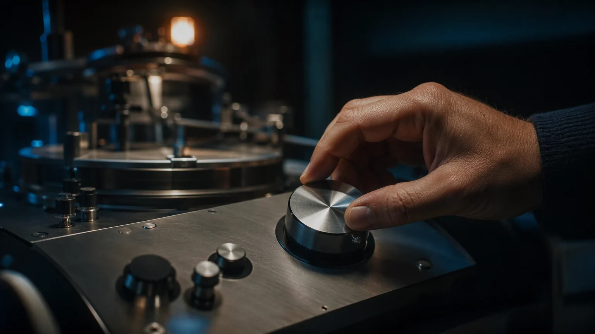
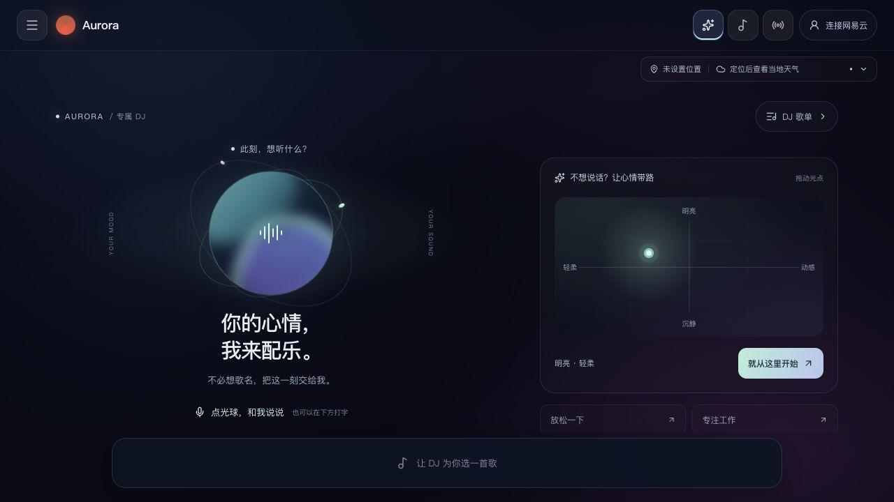

PERSPECTIVES / 11 NOTES
思考与方法
业务理解、Agent 设计与产品判断。把实践中的问题，整理成可以复用的方法。
11 篇文章
AI 时代，大学应该学什么？从获得答案，到形成自己的判断
答案越来越容易获得，大学更应该帮助我们形成那个能够提问、辨别、选择和继续学习的人。
我的 AI 工作系统：如何让一次经验变成下一次的能力
把值得保留的经验变成可调用、可检查、可更新的规则，为下一次工作留下可靠的起点。
如何成为一名合格的 AI PM：从理解问题，到为产品判断负责
理解值得解决的问题，解释能力与方案的取舍，让设计可靠落地，再用证据检验结果。

把判断变成可验证的行动
研究不是把问题再描述一遍。证据怎样支持选择，选择怎样进入实现，结果怎样被验证？
从能力供给到服务交付：让价值更容易发生
看得懂、敢授权、配得完。让商家把能力用起来，也让下一次交付少一些不可复用的工作。

懂业务的人，才知道 AI 该用在哪
“我要退款”只有四个字。真正的产品问题，藏在这四个字之后。

我从 Decagon 学到的，不是产品功能
我最关心的不是它增加了什么按钮，而是谁能够持续修改 Agent 的行为。
AI 短剧真的赚钱吗？
生成便宜了，但观众没有因此多出一小时。拆开做作品、做制作服务和做 IP 三种生意。

售后 Agent 的价值，是让事情真正往前走
会解释、会执行、能判责与能闭环，是四个不同的问题。用安装、凭证与工单拆开它们。

Aurora 2.0：把此刻的心情，交给一个专属 DJ
从一句心情到一段音乐，我想做一个愿意让人停留的播放器。

我如何设计一套五周 AI PM 实战训练
同一个项目贯穿五周，用具体交付与答辩，检查每次选择是否真正想过。